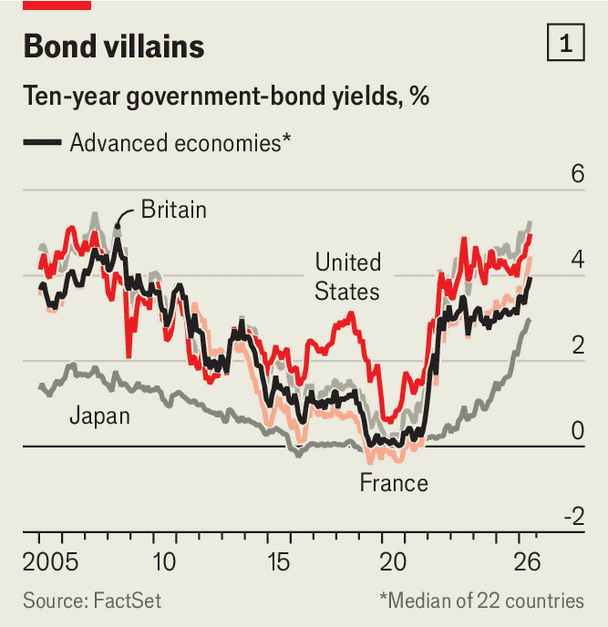
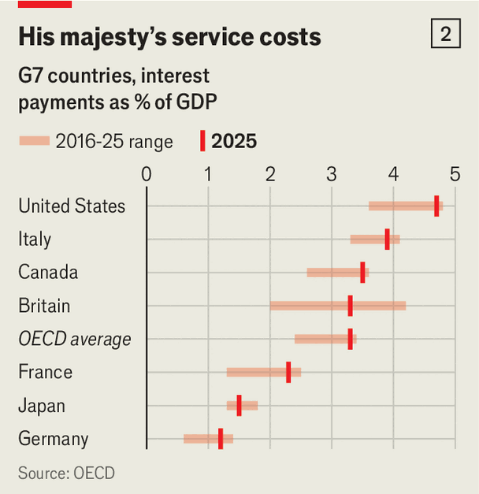
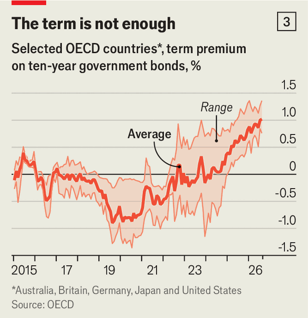
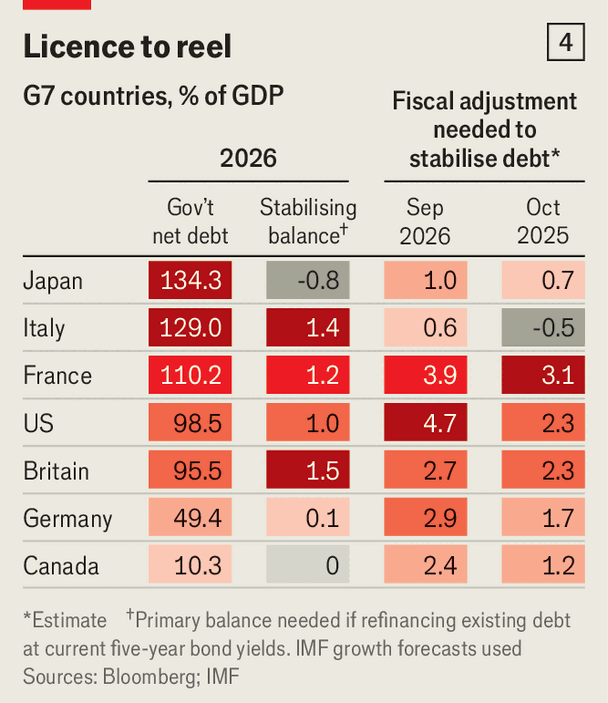

Soaring bond yields, gaping deficits and towering debts: what could go wrong?
The rich world is flirting with fiscal disaster

Sep 17th 2026
ACROSS THE rich world, investors are making governments pay up. Bond yields have risen in Britain, France, Germany and Japan. On September 14th the yield on ten-year American Treasuries exceeded 5%, the highest it has been in two decades. The median yield on rich countries’ ten-year government bonds is above 4%, its highest in more than 15 years and roughly five times its average in 2015-21 (see chart 1).

More worrying, borrowing costs are rising at a time when countries’ debts are higher than ever. Gross public debt as a share of GDP in advanced economies stands near 110%, up from around 70% in the early 2000s. In America it has more than doubled over that period; in Britain it has nearly tripled. There is little appetite for belt-tightening. America is expected to run a deficit of around 6% of GDP this year and France of more than 5%.
Throughout much of the 2010s politicians could afford to dismiss warnings of a debt reckoning, thanks to rock-bottom interest rates. Now rates are rising. On September 16th the Federal Reserve raised its benchmark rate by a quarter of a percentage point. The European Central Bank (ECB) did so the week before. And the bond market is signalling that the era of cheap government finance is over. Big borrowers are about to discover just how painful those debt piles can be when interest rates can no longer be ignored.
Governments have dealt both with high yields and with high borrowing in the past. But, at least in recent decades, not at the same time. In 2007, when the median yield on rich-world bonds was around today’s level, governments had to sell debt worth only around 11% of GDP. This year they will have to peddle more than twice as much, to finance those wide deficits and to replace debt issued when rates were far lower.

Interest payments already consume more than 3% of GDP across the OECD, a club of mostly rich countries, and nearly 5% in America (see chart 2). Much of the debt stock still carries the low rates of the old era. As that debt matures, the bill will climb. If borrowing costs stay close to where they are today, Uncle Sam’s annual interest payments could nearly triple to $2.7trn by the end of the decade, according to the Committee for a Responsible Federal Budget, a non-partisan think-tank. That is more than America spends on Medicare (to keep old people healthy) or Social Security (to pay them pensions).
Yields on short-term government debt mostly reflect where investors think central-bank rates are heading. Lend for decades, however, and they are less willing to look past inflation risk and the state of the public finances. They kept paring back their holdings of long-dated bonds even after most central banks in large rich economies began cutting rates in 2024 (yields climb as bond prices fall).

The OECD reckons that by the end of 2025 the average “term premium”—the extra return investors demand for lending long rather than short—had risen by more than one percentage point from its level before the covid-19 pandemic shook markets in 2020 (see chart 3). This year it has kept climbing. In America, the term premium is now estimated to be at its highest in more than a decade.
Growing doubts about America’s fiscal outlook in particular are dulling Treasuries’ special lustre. Investors used to accept lower yields on American government bonds than on close substitutes because they were exceptionally safe and liquid. No longer. Analysis by Lira Mota of the Massachusetts Institute of Technology, updated by Hanno Lustig of Stanford University, compares Treasuries with highest-rated corporate bonds after stripping out their default risk and finds that this “convenience yield”—the return investors are willing to forgo for holding Treasuries—had all but disappeared by July this year. That is an expensive privilege to lose when America must raise trillions of dollars in the bond market annually.
There are reasons to think that high long-term yields are here to stay. The multitrillion-dollar investment boom in artificial-intelligence infrastructure needs capital, and is competing with governments for investors’ attention. At the same time, some previously reliable buyers are disappearing. Central banks that spent years soaking up government bonds to help avert deflation are running down their holdings. Defined-benefit pension funds, which bought lots of long-dated government debt to finance payouts based on participants’ final salaries, are being replaced by defined-contribution ones that try to juice future pensioners’ returns by investing in riskier assets such as stocks.
“The marginal buyer today is the price-sensitive investor,” says Serdar Celik, head of the capital-markets unit at the OECD. Those buyers are thus demanding more compensation. In 2025 governments had to pay about two percentage points more for their ten-year bonds than they had for those being replaced. With yields higher still this year, the next wave of debt will be yet more expensive.
The best way out of a hole is, of course, to stop digging—and so borrow less. Alas, politicians are in a digging mood. In America, Donald Trump’s mammoth tax-and-spending law of 2025 made most of his earlier tax cuts permanent and added new breaks, increasing the deficit by trillions of dollars over the next decade. In Japan, Takaichi Sanae, the prime minister, is putting the state behind a vast investment push in semiconductors and AI while cutting the consumption tax. France has struggled to rein in public spending as its population ages and debt-service costs mount.
Rather than cut borrowing, governments prefer to change how they borrow. To avoid paying the term premium, they are increasingly issuing debt that comes due sooner. The share of new debt with a maturity of more than ten years is at its lowest since 2009. Governments are also relying more heavily on bills (debt which matures within a year). In the 2010s rich countries issued roughly 60% more in fixed-rate bonds than in bills. Since 2023 bills have accounted for the larger share. Nearly a quarter of America’s outstanding debt is now in Treasury bills, the highest proportion in the rich world. Its total outstanding debt now matures, on average, in less than six years—only a little longer than in a typical emerging market.
Borrowing short is not necessarily a mistake. If today’s high long-term yields prove temporary, why lock them in for decades? And if they persist because demand for long-dated bonds has structurally weakened—as defined-benefit pension schemes shrink and central banks retreat—governments have reason to shift some issuance away from longer maturities.
The flipside is, of course, that the debt comes due sooner. A third of the OECD governments’ fixed-rate debt matures by 2028, and nearly half by 2030. And right now it looks like interest rates are going up, not down. Oil prices are back above $100 a barrel as the war in Iran drags on. In America the average price of diesel, which fuels lorries, bulldozers and tractors, has never been higher. Core inflation, excluding energy and food, remains stubbornly high in many countries.
Humbled by their tardy response to pandemic-era inflation, rate-setters are not waiting around. The ECB is likely to raise rates again in the next six months. Markets expect at least two more quarter-point increases from the Fed by March 2027.
As they borrow more for shorter durations, many countries may find that their borrowing rate exceeds economic growth. In such a scenario, debt burdens rise even if governments balanced their “primary” budgets (ie, before interest payments). To see how bad things could get, The Economist has calculated what would happen if rich countries had to replace their entire debt stocks at today’s five-year bond yields, using IMF forecasts for nominal growth.

Out of 22 countries, Britain would need to run the largest primary surplus, of about 1.5% of GDP, merely to keep its debt-to-GDP ratio stable. Italy and France are next, needing surpluses of 1.4% and 1.2%, respectively. America is not far behind, requiring one of 1.0%. (see chart 4). Other countries can still run small deficits while keeping their debt burdens stable. Japan, for instance, can run a deficit of 0.8% since its growth is estimated to outpace the interest rate on its debt.
Most countries are nowhere near such surpluses today. America is running a primary deficit of nearly 4% of GDP, meaning significant belt tightening of nearly five percentage points of GDP is needed to stabilise its debt ratio at today’s borrowing costs. France is running one of nearly 3% of GDP, which translates into belt-tightening of around four percentage points. Britain, which needs to have the largest surplus of the bunch, has at least cut its deficit this year and pencilled much of that adjustment into its budget plans. France has no comparable plan, and its politicians have shown little enthusiasm for drawing one up ahead of a presidential election next year. America’s prospects look bleaker still.
Most worrying of all, the situation is deteriorating fast as a result of persistent deficits and surging yields. Just a year ago America required an adjustment of more than two percentage points less than it does today. France’s predicament has worsened by almost one percentage point. Making matters trickier for many European countries, their high tax take (as a share of GDP) limits how much more money they can squeeze out of taxpayers without doing economic damage. France, where government revenue exceeds 50% of GDP, already has little room to manoeuvre.
What if interest rates do not come down and governments refuse to make those adjustments? Shorter maturities can postpone the pain, but they cannot make it disappear. As cheap debt matures, interest bills will rise, deficits will widen and the belt-tightening eventually needed to stabilise debt will grow larger. That could then push yields higher still, making the arithmetic worse again. The longer governments put off the reckoning, the nastier it will become.■